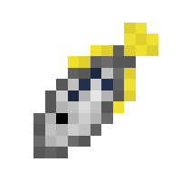
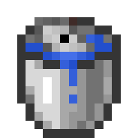

Archerfish
Archerfish are predatory river fish that possess the unique ability to "spit" water at both players and insect mobs.
Spawning
Archerfish are rare solitary fish that spawn exclusively in rivers. The way archerfish spawn naturally is by replacing some naturally spawning aquatic mob. In rivers, each salmon has a chance to be replaced with an archerfish. The table below shows the spawn rates of the archerfish in the biome it spawns in.
| Biome | Spawn Chance (Replacement Chance) | Group Size |
|---|---|---|
| Rivers | 4.1% (Salmon) | 1 |
Items
Item drop chances
Archerfish can drop 1 - 2 items upon death. The items it can drop are bonemeal and the archerfish item (if killed by a player). Below is a table that shows the chances for it to drop items:
| Item | Chance | Count |
|---|---|---|
| Bonemeal | 66.67% | 1 |
| Archerfish Item | 33.33% (if killed by player) | 1 |
Archerfish (Item)

The archerfish (item) is collectible/trophy item. Players can put it in item frames or keep it in storage. It can also be used as a source of food for the player. Below are the food statistics of the archerfish item:
- Nutrition: 2
- Saturation: 0.4
Behavior
Archerfish are midwater swimmers that swim anywhere in their habitat. They have no restrictions like some other freshwater fish like the catfish, who like to stay at the bottom of the riverbed. Their swim speed is about the same as most other fish mobs like the largemouth bass, salmon, cod, etc.
Spit Attack
Archerfish possess a very unique ability that is not found in any other Blue Depths mob (at least currently), the ability to spit water. This behavior mimics the real life ability of the archerfish, who typically use this spit attack to target insects near the waters surface to shoot them down so the archerfish can have a insect snack.
This spit attack makes them predatory fish, not just for insect mobs, but also to the player as well (something the real life archerfish does not do). However, their predatory behavior is a bit different from the other mobs, because of the fact that they will not go out of the way to target, chase, or attack players/mobs. They will simply attack any nearby entity that they see as a target. The entities they see as targets are listed below:
- Players out of water (Survival or Adventure mode)
- Bees
- Spiders
- Cave Spiders
- Silverfish
- Endermite
The way the spit attack affects other mobs is dependent on the mob. The damage received from the spit attack is different for players and every other mob in the game. The spit attack can also deal damage to every other mob that is not a target, such as those who get hit with a stray spit.
Spit Attack Stats:
- Attack Cooldown: 6 seconds
- Attack radius: 10 blocks
- Attack Type: Projectile
- Stops at:
- Mobs (players included)
- Solid Blocks
- Attack damage:
- Players (Survival or Adventure mode): 0.5 HP (0.25 hearts)
- Archerfish: 0 HP (0 hearts)
- Other mobs: 10 HP (5 hearts)
- Projectile top distance: 12.5 blocks
- Projectile speed: 5 blocks per second
Obtaining Archerfish
Bucket of Archerfish

Because of their size archerfish can actually be kept as pets and transported via water buckets. The player only needs to use a bucket of water near the archerfish to scoop it up, replacing their water bucket with a bucket of archerfish archerfish. Like with vanilla Minecraft mobs, right clicking the ground with the bucket of archerfish will place water and the archerfish, giving the player an empty bucket. When am archerfish is placed down via the bucket, it won't despawn, unlike wild, naturally spawning archerfish who will despawn when the player leaves the area.
History
Development History
| Datapack Version | Addition/Change |
|---|---|
| 1.1.0 (Roaring Rivers Part 1: Below the Surface) |
|